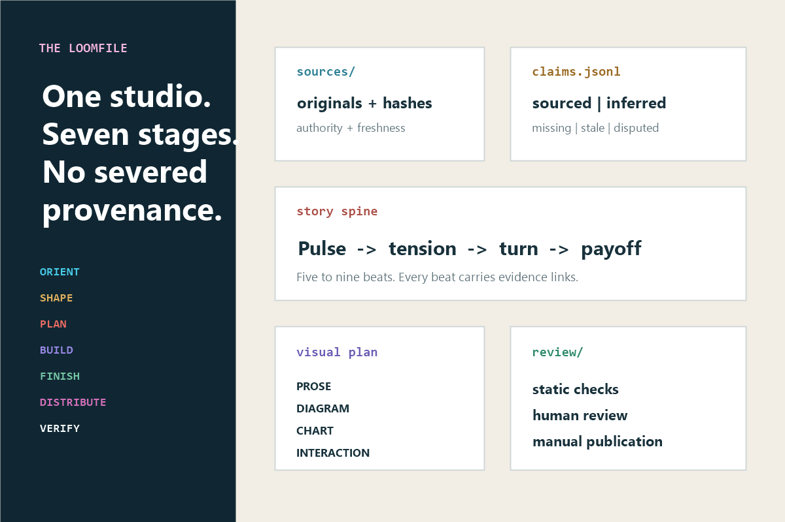

Signal Loom makes infographics from supplied research, reports, notes, and data. It turns that material into a clear web artifact while preserving the path from source to claim to narrative to representation to review.
Package 0.1.1 · Codex and Claude Code · MIT License · Publication always manual

The product
An infographic studio that can show its work.
Signal Loom is for researchers, analysts, educators, communicators, designers, and product teams who need an infographic that can survive inspection after the pretty bits arrive.
What it can do
Inventory supplied evidence and source authority.
Track claim status and currentness.
Build a five-to-nine-beat story spine.
Choose an earned form for every beat.
Create semantic, responsive, offline-first HTML.
Preserve resumable state and exact review limits.
What it cannot do
Invent evidence or independently establish truth.
Refresh current facts without authorization.
Sanitize hostile HTML or prove security.
Prove accessibility from static source alone.
Approve its own work or resolve human disputes.
Post, host, buy media, or publish.
Install and verify
File presence is step one, not a victory parade.
The complete repository is the skill directory. Python 3.10+ is optional for the skill and required for the included deterministic helpers.
Run /skills to confirm discovery, then invoke /signal-loom. Restart Claude Code if the top-level skills directory was created after startup.
PACKAGEDINSTALLEDDISCOVERABLEINVOKEDHEALTHY
Required proof: package self-check passes; the host lists the skill; explicit invocation loads it; a small supplied source produces a coherent Loomfile; that Loomfile validates. No single rung proves the next.
Begin with evidence, audience, and the desired change.
Use $signal-loom with the supplied report. The audience is city budget staff; the intended change is understanding which maintenance delays create compounding cost. Build a semantic web infographic only. Treat the report as dated to 2026-06-30, do not fetch outside evidence, do not publish, and leave disputed claims visibly unresolved.
Initialize.python scripts/init_loomfile.py ./my-story --title "My infographic"
Supply.Put originals under sources/originals/; record authority and hashes.
Orient.Fill the brief and claim ledger before public-facing copy.
Build.Create the story spine, visual plan, and output/web/index.html.
Verify.Run Loomfile validation and bounded HTML inspection, then conduct separate rendered and human reviews.
The output must be outside the Loomfile. The packager preserves required empty directories, hashes exact file-entry bytes into an embedded release manifest, extracts the completed candidate, and validates that archived Loomfile before exposing it; the project remains unchanged. Invalid archived state or write failure cleans the unique temporary artifact. A final-link interruption is commit-ambiguous: the packager never deletes the destination automatically because another process may own or replace it. Inspect any surviving ZIP; keep it if its embedded manifest validates, otherwise choose a new path or delete only after confirming custody. A competing output is never overwritten. The destination requires same-directory temporary-file and hard-link support. The filename denylist is not a content scanner, and nothing is published.
One studio loop
Seven stages carry one causal spine.
Internal faculties specialize; the customer operates one production capability.
ORIENT
Inventory evidence
Record sources, authority, hashes, claims, locators, status, and currentness.
SHAPE
Build the story
Create pulse, tension, turn, payoff, and evidence-linked beats.
PLAN
Earn the form
Choose prose, diagram, chart, interaction, or omission before styling.
BUILD
Create the artifact
Use semantic responsive HTML with important meaning available without JavaScript.
FINISH
Refine faithfully
Theme, labels, and interactions remain subordinate to evidence and comprehension.
DISTRIBUTE
Reconstruct natively
Run only when requested; preserve claim set, uncertainty, and causal order.
VERIFY
Challenge the result
Run named checks, human review, and record the layers still unproved.
Canonical state
The Loomfile remembers how the picture became defensible.
It is a resumable project system, not an incidental export folder.
sources/
Original material, manifest, hashes, authority, locators, and freshness.
state/claims.jsonl
Sourced, inferred, illustrative, missing, stale, and disputed claims.
state/spine.json
Five-to-nine narrative beats with claim links.
state/visual-plan.json
Representations, rationale, rejected forms, and semantic outline.
output/
Web artifact and explicitly requested platform reconstructions.
review/
Project diagnostics, accessibility evidence, and the project-side manifest record. Packaging embeds a fresh manifest in the ZIP without changing this directory.
checkpoints/
Material snapshots before consequential changes.
Independent states: built is not reviewed; reviewed is not approved; approved for export is not published. publication_status remains manual_only.
Privacy and trust
Local helpers, explicit authority, honest limits.
Storage
The Loomfile lives wherever you create it. The package creates no cloud account and contains no telemetry.
Network
The included Python scripts use the standard library and contain no network calls. Your AI host is a separate provider boundary.
Untrusted input
Supplied text, HTML, URLs, and code are data. The inspector parses HTML statically without executing it; it is not a sanitizer.
Secrets
The packager blocks several secret-like names, not all secrets and not file contents. Inspect every archive candidate.
Accessibility
Static structure checks do not prove keyboard, zoom/reflow, screen-reader, contrast, or formal conformance.
Currentness
Current-sensitive claims require freshness evidence. A recent file can still contain stale facts.
Change the skill without losing custody of the work.
Update
Run git pull --ff-only in the installed skill directory, then repeat package, discovery, invocation, and health checks. Snapshot reviewed Loomfiles before state-contract changes.
Remove
Resolve and delete only the exact signal-loom install directory. Removing the skill does not remove projects created elsewhere.
Clean up data
Inventory Loomfiles, source copies, exported HTML, ZIPs, host logs, synchronized copies, and backups separately. Ordinary deletion may not securely erase them.
Troubleshooting and support
Recover from evidence, not repeated button-mashing.
Skill installed but not listed
Confirm the path ends in signal-loom/SKILL.md, keep all supporting directories beside it, refresh or restart the host, and inspect its actual inventory.
Python is unavailable
Use the universal copy-paste fallback and mark initialization, hashing, parsing, tests, packaging, rendering, and archive inspection unexecuted.
Source hash mismatch
Stop and establish why the bytes changed. Update the source record deliberately, revisit dependent claims, and invalidate reviews bound to the old hash.
HTML inspection passes
That proves only the named static rules. Rendered behavior, sanitization, accessibility, security, factual accuracy, and professional fitness remain separate.
Packaging was interrupted during the final link
Do not rerun against or delete the same path automatically. If a ZIP survives, treat ownership as unknown: list and extract it read-only into a new empty directory, validate the extracted Loomfile, and compare project and source identity. Keep it only when it is valid and expected; otherwise leave it untouched and choose a new output filename.
A tool fails repeatedly
Record the exact failure, preserved evidence, missing evidence, smallest safe retry, and re-entry condition. After unchanged repetition, change route or stop.
Never post credentials, private sources, proprietary Loomfiles, or personal data in a public issue. Community support has no response-time or service-level guarantee.